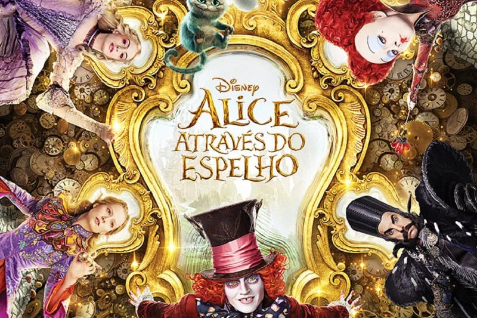

Alice, curiosa, atravessa um espelho em sua casa e entra em um mundo mágico onde tudo é ao contrário, como um reflexo.
Nesse lugar, ela descobre que está em um enorme tabuleiro de xadrez e precisa seguir as regras do jogo para se tornar uma rainha.
Durante sua jornada, encontra personagens estranhos e divertidos, como Tweedledee e Tweedledum, Humpty Dumpty e as Rainhas vermelha e branca.
No final, Alice alcança seu objetivo e torna-se rainha.